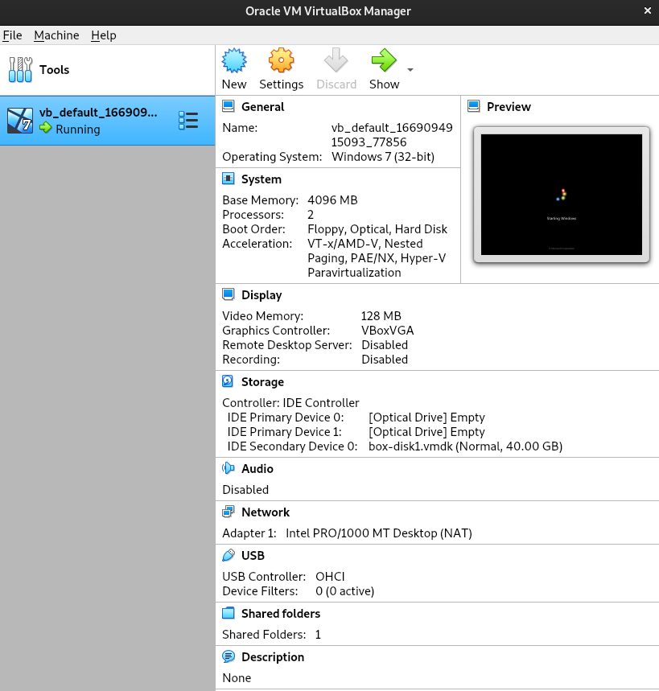

(Logos are trademarks/copyright of respective owners)
Context
This is following up on the work done for previous post. I’ve tested a 32bits build of an application, running it on a Windows 7 64 bits, and it appears to work fine. But a tester encountered problems installing and running it on a Windows 32bits installation.
There are no options that I can see to install 32bits windows images on Azure DevOps. So, can I find a test image that I can run, preferably on top of a Linux installation?
“Of course it is entirely feasible”. How?
Options
Microsoft helpfully offers free legacy Windows virtual machines you download and manage locally for testing purposes. This includes images for Windows 7 32 bit, ideal for my tests. There are options to select VM platforms to download, and two of the suitable ones for my case are Vagrant and VirtualBox.
I started with the goal to use Vagrant such that the VM is accessible from qemu (and or kvm?). I never really learned or used Vagrant so far, so why not try. And I have a soft spot, and a fair bit of respect, for people behind qemu and kvm.
But I hit a snag trying to provision the VM for libvirt. I’ll start in this post with the setup that actually worked, with Vagrant and VirtualBox, then capture elements with the libvirt+qemu with the hope this helps others, or myself to crack it at some point.
Installing prerequisites
On Linux Debian I started with sudo apt install vagrant vagrant-lxc vagrant-libvirt. There are several vagrant-* plugins in Debian. I probably should have installed most of them. Vagrant can also install them from internet sources later, which I did for vagrant-mutate for instance with vagrant plugin install.
which kvm indicates kvm is already installed, not sure from which Debian package. quemu-* commands are present.
Windows test image
Getting from Microsoft download site a Win7 32bits image for Vagrant:
cd ~/tmp/vm
mv ~/Downloads/IE11.Win7.Vagrant.zip ./
unzip IE11.Win7.Vagrant.zip
ls -l-rw-r--r-- 1 xxxyyy xxxyyy 4989880652 Sep 23 2015 'IE11 - Win7.box'
-rw-r--r-- 1 xxxyyy xxxyyy 4989880932 Nov 22 11:08 IE11.Win7.Vagrant.zipI dislike spaces in filenames so mv IE11\ -\ Win7.box Win7_32.box
Creating the Vagrant box
vagrant box add Win7-32 file:///${HOME}/tmp/vm/Win7_32.box==> box: Successfully added box 'Win7-32' (v0) for 'virtualbox'!xxxyyy@mymachine:~/tmp/vm$ vagrant box list
Win7-32 (virtualbox, 0)From a vagrant tutorial:
Vagrant uses a base image to quickly clone a virtual machine. These base images are known as “boxes” in Vagrant, and specifying the box to use for your Vagrant environment is always the first step after creating a new Vagrantfile.
While you can create a Vagrantfile from scratch, vagrant init Win7-32 creates a stub with defaults.
The path that worked: Vagrant and VirtualBox
I installed VirtualBox following some of the download instructions from virtualbox.org. There are several ways for Debian. virtualbox is not in the main repo, but available via a fast-track one. In the end, adding the external repository from Oracle in the “Debian-based Linux distributions” section seemed easier:
sudo nano /etc/apt/sources.list
# add additional repo
wget -O- https://www.virtualbox.org/download/oracle_vbox_2016.asc | sudo gpg --dearmor --yes --output /usr/share/keyrings/oracle-virtualbox-2016.gpg
more /usr/share/keyrings/oracle-virtualbox-2016.gpg
sudo apt-get update
sudo apt-get install virtualbox-6.1Restart xterm and co to get changes to PATH env var, perhaps.
After clearing up previous tests with vagrant box remove ... re-add the box, which will default to virtualbox in format:
vagrant box add Win7_32_vb file:///${HOME}/tmp/vm/Win7_32.boxGet a Vagrant file with vagrant init Win7_32_vb
Then vagrant up --provider virtualbox mostly seems to works, but:
default: SSH address: 127.0.0.1:2222
default: SSH username: vagrant
default: SSH auth method: private key
default: Warning: Authentication failure. Retrying...
default: Warning: Authentication failure. Retrying...I forgot to add the following to the Vagrantfile:
# Configure remote access
config.ssh.username = "IEUser"
config.ssh.password = "Passw0rd!"
# Use 2 CPU and 4GB of RAM
config.vm.provider :virtualbox do |v|
v.cpus = 2
v.memory = 4096
endThen vagrant up --provider virtualbox works and starting the VirtualBox GUI shows the running machine:

The path I’d like to work: Vagrant, KVM and Qemu
This section contains a rough log of steps that did not eventuate as a working solution. Capture for my future self if I revisit this.
vagrant up --provider=kvmThe provider 'kvm' could not be found, but was requested to
back the machine 'default'. Please use a provider that exists.
Vagrant knows about the following providers: docker, hyperv, virtualbox, libvirt, lxcMuh, don’t know. Maybe:
vagrant up --provider=lxc
Bringing machine 'default' up with 'lxc' provider...
==> default: Box 'Win7-32' could not be found. Attempting to find and install...
default: Box Provider: lxc
default: Box Version: >= 0
==> default: Box file was not detected as metadata. Adding it directly...
==> default: Adding box 'Win7-32' (v0) for provider: lxc
default: Downloading: Win7-32
An error occurred while downloading the remote file. The error
message, if any, is reproduced below. Please fix this error and try
again.
Couldn't open file /home/xxxyyy/tmp/vm/Win7-32OK, fair enough, the box is for provider virtualbox by default. I need to mutate to something else. libvirt, it seems, inferring frin (REF?).
Clean up with vagrant box remove Win7-32, and restart the process.
vagrant box add windows/Win7-32 Win7_32.boxvagrant plugin install vagrant-mutate
vagrant mutate windows/Win7-32 libvirt
vagrant box remove --provider virtualbox windows/Win7-32vagrant init windows/Win7-32
vagrant up --provider libvirt --no-destroy-on-error==> default: Creating shared folders metadata...
==> default: Starting domain.
==> default: Waiting for domain to get an IP address...Taking cues from a libvirt github issue on “waiting for domain to get ip”
sudo apt install vagrant-libvirt libvirt-daemon-system
sudo usermod --append --groups libvirt $USERlog out and back in to have this update effective
groups | grep -o libvirt does not show the expected user name. WTH? Yet more /etc/group | grep virt does include libvirt:x:132:xxxyyy
virt-manager
vagrant version
for net in $(virsh net-list --name); do virsh net-dhcp-leases ${net}; done
virsh --help
virsh --connect=qemu:///system list --all
virsh --connect=qemu:///system domiflist vm_default
virsh --connect=qemu:///system net-list --all sudo iptables -L -n | less looks like libvirt does update the iptables
Coming across how-to-disable-iptables-firewall-temporarily
sudo su
iptables -F
iptables -X
iptables -P INPUT ACCEPT
iptables -P OUTPUT ACCEPT
iptables -P FORWARD ACCEPTvagrant up --provider libvirt
==> default: -- INPUT: type=mouse, bus=ps2
==> default: Creating shared folders metadata...
Error while activating network: Call to virNetworkCreate failed: internal error: Failed to apply firewall rules /usr/sbin/iptables -w --table filter --insert LIBVIRT_INP --in-interface virbr1 --protocol tcp --destination-port 67 --jump ACCEPT: iptables: No chain/target/match by that name.OK, I give up, no time for this anymore.
Conclusion
Sure, libvirt/KVM is faster than VirtualBox, and with a “purer” stack. But I bumped into issues quite stereotypical for the GNU/Linux ecosystem: partial bits of documentation, obscure problems arising that deflate the “not so advanced” users pressed for time. This is an anecdotal observation not a complaint (I know the pain). I hope to revisit the VM over libvirt/KVM/QEmu in the future, or that a reader can contribute with their own post.